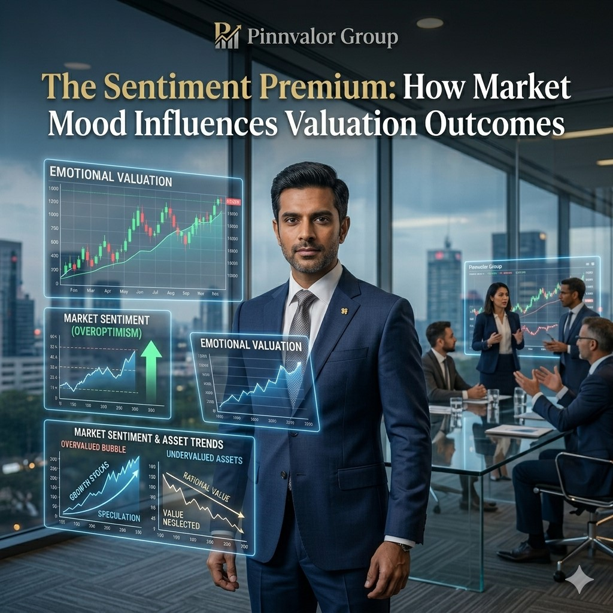

The Sentiment Premium: How Market Mood Influences Valuation Outcomes
Business valuation is often perceived as a purely analytical exercise driven by financial statements, cash flow projections, industry benchmarks, and economic indicators. While these quantitative factors form the foundation of valuation, another powerful force frequently shapes market outcomes—market sentiment.
When markets turn emotional, does true value even matter anymore?
Markets don’t just price performance—they price perception. When sentiment turns optimistic, valuations rise beyond fundamentals, and when fear takes over, even strong businesses get undervalued.
Market sentiment reflects the collective attitude, emotions, and expectations of investors toward a company, industry, or the broader economy. It can drive valuations significantly above or below intrinsic value, creating what many financial experts refer to as the "Sentiment Premium."
Understanding how sentiment affects valuation is critical for investors, business owners, finance professionals, and corporate decision-makers seeking to make informed strategic and investment decisions.
What Is Market Sentiment?
Market sentiment refers to the overall emotional tone and psychological outlook of market participants. Unlike fundamental analysis, which focuses on measurable financial performance, sentiment is influenced by perceptions, expectations, confidence levels, and behavioral factors.
Market sentiment can be:
- Bullish: Investors expect growth and higher future returns.
- Bearish: Investors anticipate risks, uncertainty, or declining performance.
- Neutral: Market participants remain cautious and await additional information.
Sentiment often influences investment decisions even when underlying business fundamentals remain unchanged.
Understanding the Sentiment Premium
The Sentiment Premium represents the additional value investors are willing to pay due to positive expectations and confidence regarding a company's future prospects.
Conversely, negative sentiment can create a Sentiment Discount, where market participants undervalue a business despite strong operational performance.
For example:
- A technology startup with moderate revenues may command a high valuation due to strong market optimism.
- A mature manufacturing company with stable cash flows may trade at lower multiples if investors perceive limited growth opportunities.
- Businesses operating in trending sectors often receive valuation premiums despite similar financial metrics compared to traditional industries.
These differences demonstrate that valuation is influenced not only by numbers but also by investor psychology.
Key Drivers of Market Sentiment
1. Economic Outlook
Macroeconomic conditions significantly influence investor confidence. During periods of economic expansion, businesses often enjoy higher valuation multiples due to optimism about future growth.
Factors include:
- GDP growth expectations
- Interest rate trends
- Inflation outlook
- Employment levels
- Consumer spending patterns
Positive economic indicators generally support stronger market sentiment and higher valuations.
2. Industry Trends
Industries experiencing rapid innovation or structural transformation often attract substantial investor attention.
Examples include:
- Artificial Intelligence
- Renewable Energy
- Electric Vehicles
- FinTech
- Cloud Computing
Companies operating within these sectors frequently receive premium valuation multiples because investors anticipate strong future growth.
3. Media Influence
Financial news, analyst reports, social media discussions, and market commentary can shape investor perceptions rapidly.
Positive media coverage may:
- Increase investor interest
- Boost market confidence
- Drive stock demand
- Support higher valuation levels
Similarly, negative publicity can trigger valuation declines regardless of actual business performance.
4. Corporate Leadership and Reputation
Strong leadership teams often inspire investor confidence.
Investors frequently assign valuation premiums to companies led by executives with:
- Proven track records
- Clear strategic vision
- Strong governance practices
- Consistent execution capabilities
Trust in management can significantly impact market perception and valuation outcomes.
5. Investor Expectations
Future expectations often matter more than current results.
Companies projecting strong growth trajectories may receive higher valuations even when current profitability remains modest.
In contrast, businesses delivering strong current earnings but limited future growth prospects may experience lower valuation multiples.
Case Study: Market Sentiment and Valuation Outcomes
Consider two hypothetical companies operating in similar markets.
Company A
- Revenue Growth: 15%
- EBITDA Margin: 20%
- Strong cash flows
- Traditional industry
- Limited media attention
Company B
- Revenue Growth: 15%
- EBITDA Margin: 20%
- Comparable cash flows
- Operates in an emerging technology sector
- High investor interest
- Strong media coverage
Although both companies exhibit similar financial performance, Company B may trade at substantially higher EBITDA and revenue multiples due to stronger market sentiment.
This valuation gap reflects investor expectations regarding future opportunities rather than differences in current financial fundamentals.
How Sentiment Affects Valuation Methodologies
Discounted Cash Flow (DCF) Analysis
Sentiment can indirectly affect DCF valuations through assumptions related to:
- Revenue growth rates
- Terminal value estimates
- Risk premiums
- Discount rates

Positive sentiment often results in more optimistic projections, increasing valuation estimates.
Market Multiple Approach
Sentiment has a direct impact on market multiples such as:
- Price-to-Earnings (P/E)
- EV/EBITDA
- EV/Revenue
- Price-to-Book (P/B)
High-growth sectors frequently experience multiple expansion during periods of strong market optimism.
Comparable Company Analysis
Investor sentiment influences the valuation benchmarks used in comparable company analysis.
If market enthusiasm drives industry-wide multiple expansion, valuation outcomes for similar companies may also increase.
Behavioral Finance and Valuation
Behavioral finance provides valuable insights into how emotions and cognitive biases influence valuation outcomes.
Herd Mentality
Investors often follow prevailing market trends without independently evaluating fundamentals, leading to valuation bubbles or excessive pessimism.
Overconfidence Bias
Investors may overestimate their ability to predict future performance, resulting in inflated valuations.
Recency Bias
Recent positive or negative events can disproportionately influence investor expectations, affecting valuation judgments.
Fear and Greed Cycles
Financial markets frequently swing between optimism and pessimism, causing valuations to deviate from intrinsic value.
Risks of Relying Solely on Sentiment
While sentiment can create opportunities, excessive dependence on market mood carries significant risks.
- Valuation bubbles may emerge.
- Asset prices may disconnect from fundamentals.
- Market corrections can rapidly erase valuation premiums.
- Investors may underestimate underlying business risks.
- Strategic decisions may be based on unrealistic expectations.
History has repeatedly demonstrated that sentiment-driven valuations eventually face scrutiny from financial reality.
How Businesses Can Benefit from Positive Sentiment
Organizations can strategically leverage positive market sentiment to create value.
- Raise capital at favorable valuations.
- Pursue mergers and acquisitions using highly valued equity.
- Strengthen investor relations.
- Enhance market visibility.
- Attract strategic partners and stakeholders.
However, sustainable value creation requires balancing market expectations with operational performance.
Best Practices for Valuation Professionals
- Separate market sentiment from intrinsic value analysis.
- Evaluate both quantitative and qualitative factors.
- Use multiple valuation methodologies.
- Perform sensitivity analysis under different market scenarios.
- Monitor industry and investor sentiment trends.
- Assess long-term fundamentals alongside short-term market movements.
A comprehensive valuation approach recognizes the influence of sentiment while maintaining a disciplined focus on economic reality.
Conclusion
The Sentiment Premium is a powerful force that shapes valuation outcomes across industries and market cycles. While financial performance remains the cornerstone of business valuation, investor emotions, expectations, and perceptions often determine how markets interpret those fundamentals.
For investors, corporate leaders, valuation professionals, and financial advisors, understanding the relationship between sentiment and valuation is essential for making informed decisions. By combining rigorous financial analysis with an awareness of market psychology, stakeholders can better navigate valuation opportunities, identify potential risks, and develop a more balanced perspective on business worth.
Ultimately, successful valuation is not merely about measuring financial performance—it is about understanding how markets perceive future potential and translating that perception into informed, strategic decision-making.